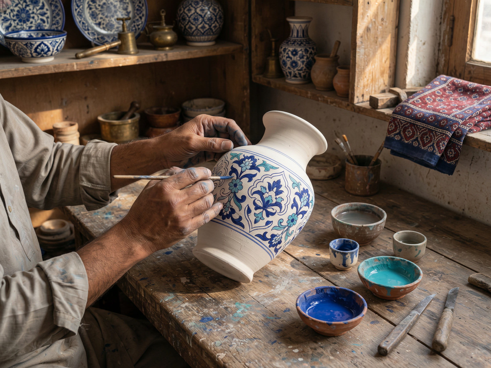

Authentic Craftsmanship
Genuine hand-painted Kashi glazes, hand-carved rosewood, and vegetable-dyed cotton.
Discover small-batch Pakistani handicrafts — from Matiari Ajrak dupattas and Multani blue pottery vases to Chinioti carved wooden boxes, Hala embroidery, Lahore leather khussas, and Rawalpindi truck-art décor.

Matiari Ajrak & Multan Kashi Edit
Explore six signature regional disciplines preserved by independent craft workshops across Pakistan.
Block-printed Sindhi Ajrak dupattas in indigo and madder from Matiari.
Shop Textiles →Hand-thrown Multani Kashi ceramic vases and kiln-glazed tableware from Multan.
Shop Pottery →Seasoned Sheesham keepsake boxes and floral relief carvings from Chiniot.
Shop Woodcraft →Hand-stitched Sindhi needlecraft cushion covers and mirror-work from Hala.
Shop Embroidery →Vegetable-tanned traditional leather khussas stitched in historic Lahore.
Shop Leather →Vibrant hand-painted decorative trays and home accents from Rawalpindi.
Shop Truck-Art →Priced transparently in PKR. Save favourites to your Wishlist, inspect craft specs in Quick View, or add straight to your Bag.
Every piece on Craftora carries the story of its workshop. Profiles below are fictional demo showcases representing regional Pakistani craft guilds.

Across Multan, Bhit Shah, Chiniot, Swat, Peshawar, and Bahawalpur, master craftspeople carry techniques refined over generations. Yet traditional makers often remain separated from modern buyers by layers of middlemen.
Craftora bridges that distance with honest storytelling, fair workshop pricing in PKR, and careful protective packaging so heirloom pottery, textiles, and woodwork reach contemporary homes intact.
Thoughtfully curated handmade goods backed by transparent artisan sourcing and dependable nationwide delivery.
Genuine hand-painted Kashi glazes, hand-carved rosewood, and vegetable-dyed cotton.
Direct collaboration ensures regional workshops receive transparent, dignified pricing.
Double-cushioned recyclable crating tailored for fragile pottery and camel-skin lamps.
Every batch is inspected for finish, durability, and faithful regional craft standards.
Notes from buyers across Pakistan welcoming Craftora pieces into their homes and gifting traditions.
★★★★★
“The Multani Kashi vase arrived in Islamabad cushioned like museum glass. The cobalt brushwork looks even richer in morning daylight.”
★★★★★
“Gifted the Chiniot Sheesham jewellery box at my sister’s wedding in Lahore. Everyone asked which workshop crafted the brass inlay.”
★★★★★
“Softest block-printed Sindhi Ajrak shawl with genuine natural dye aroma and crisp geometric borders. Proud to support local weavers.”